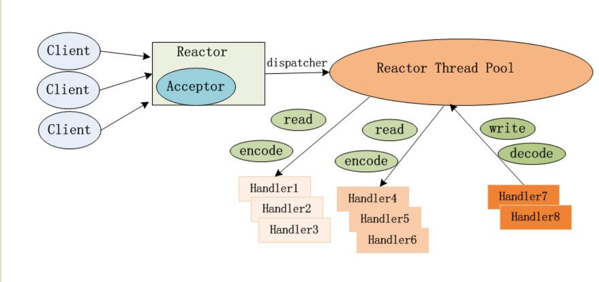

Netty 百万连接协议解析
Netty 是一个高性能的网络框架,被广泛的运用在底层的网络传输,在保持高性能的同时也保证了API的简单易用性,可谓是广大Java er 网络编程必选神器
在IOT的领域里面,为了更好的采集更多更准确的数据,业界也常常使用的一种方案保持长连接,然后保持长连接的手段就是使用tcp协议
来建立终端与server之间的一个桥梁.由于tcp 是一个面向连接的流协议,当初在设计tcp的时候为了能更好地发挥它的性能提高它的吞吐,tcp 可能会将一些
小的数据包包装一次大的数据报,或者将一些大的数据报才分成小的数据包,然后在发送给服务端. 从而就需要服务端进行一个粘包和半包的处理.
在实现粘包和半包处理之前,我们先了解一下netty的架构,这将帮助我们后面更好的理解
netty 他是一个reactor 模式的网络框架,我们传统io方式,将一个连接我们开启一个线程去处理这些任务,但是这样遇到一个情况就是,当连接过多的时候,我们服务端
线程的数量也会增多,这对于os来说是压力对资源也是一种浪费效率低下,为了解决这样问题,所以一些新的io方式出现,io多路复用,使用一个线程,来进行所有连接的一个监听
当在相应的连接上面有我们想要的事件(可读事件,可写事件…)然后触发我们的处理逻辑,这样就成功的避免到每一个连接开一个线程的这种模式.

当一个新的连接连接到server端的时候,首先是acceptor接受到这个请求,然后将该请求派发给后面的线程池,然后线程池选择一个线程对数据进行一个解码,计算等处理.acceptor仅仅需要一个线程即可处理客户端的很多连接
要解决tcp粘包的问题,其实就是在每一个数据包的前面加上一个特殊的字符,然后服务端通过特殊字符进行一个分解. 当然还有其他方式,比如放入消息的长度,后面通过长度来决定一下消息的结束. 我们这里采用的是第一种加入一个特殊字符来进行一个处理
我们的数据分为 消息头(header),消息体(body),我们在消息头前面加上一个标识符暂定0x7e吧,在消息体的后面通过每一位进行一个校验码crc 以及最后在加上一个flag和之前的是一样的
|flag|header|body|crc|flag|
这样我们在服务端只要找到flag 开始和结束的那就说明我们以及收到一个完整的包了,聪明的你应该这里有一个疑问,如果数header 或者body 里面包含了flag 这个数据的时候那不是被打打乱了吗?为了解决这个问题呢,我们需要进行一个转码的操作,当我们的header 或者body 里面包含flag的时候,我们将flag转换成flag后面紧跟着一个0x01这样我们在服务端收到数据的时候避免掉这样的情况了,这就是一个协议解析的一个大题过程.
在netty中使用缓冲器bytebuf来对tcp进行一个读取操作
1:判断bytebuf 的大小是大我们协议里面的header 大小,header的大小是固定的
2:寻找 bytebuf里面的第一个 以flag 开始的位置,记录startIndex
3:以startIndex开始,继续寻找后面一个flag 的位置,记录为endIndex,如果当bytebuf里面最后一个都不是flag那么将直接返回null
4:将bytebuf里面重 [startIndex , endIndex] 这个区间里面的数据拷贝出来生成一个新的bytebuf
5:将拷贝出来的bytebuf 进行一个转码操作
6:进行一个协议的解析业务处理(crc 校验,加密,解密 …)
在netty 的实践之中,我们需要对bytebuf 的一下操作,为了更加进一步的提高性能,netty默认使用direct buf对外内存. 我们在实际的使用过程中未能更够尽可能的降低gc压力以及影响我们推荐使用Pooled 进行一个池化操作同时我们在进行一个bytebuf 拷贝的时候尽可能的是slice 因为本质还是使用原来的对象,只是索引变化而已,从而减少数据的拷贝,当然这一点也要注意如果一个更改也会同发生变化